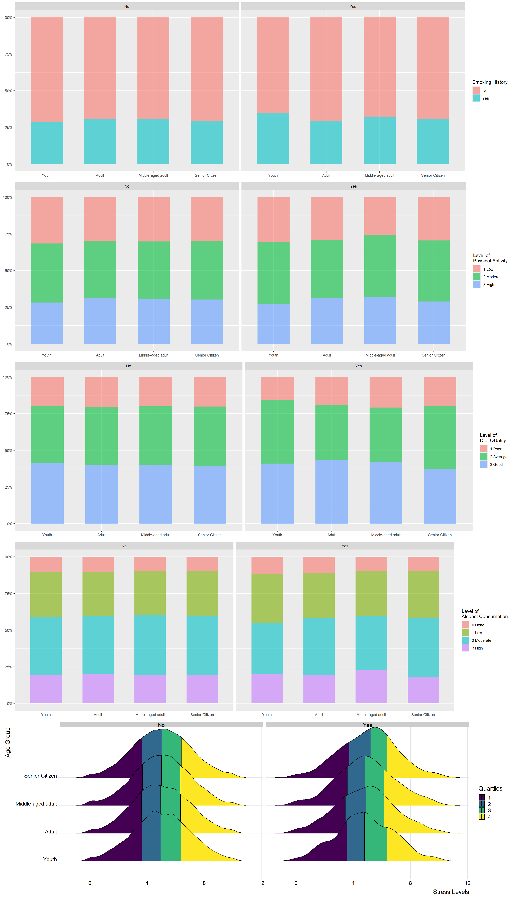

pacman::p_load(tidyverse, SmartEDA, ggdist, ggpubr)Take Home Exercise 1
1. Overview
1.1. Background
In this exercise, Japan’s heart attack occurrences are studied alongside with several possible contributing factors. Increasing numbers of heart attacks over the years make it crucial to study the situation surrounding these occurrences, and find out if there are any correlations. Insights from this analysis will then hopefully aid as a preventive measure.
1.2. Objectives
Using the dataset Heart Attack in Japan Youth vs Adult, we attempt to understand the heart attack situation in Japan and gain insights surrounding the different age groups.
2. R packages
Appropriate R packages will be installed and loaded for effective data processing and transformation. The R packages used and its respective function will be displayed in the table below.
| R Package | Function |
|---|---|
| tidyverse | A collection of packages to do various types data analyses. |
| SmartEDA | For initial exploratory analysis describing the structure and relationships present in the data without lengthy R codes. |
| ggdist | |
| ggpubr | |
3. Data
3.1. Loading the data
The dataset is first loaded using read_csv.
japan_data <- read_csv("japan_heart_attack_dataset.csv")3.2. Data overview and selection
First, we look at the dataset to see if there are any missing or duplicated values. Using ExpData, there are 30,000 rows of data with no missing values nor duplicated rows. It should also be noted that there are 15 extra columns of numerical values that are meaningless as they seem to be the results of certain calculations which are not stated.
Index Variable_Name Variable_Type Sample_n Missing_Count
1 1 Age numeric 30000 0
2 2 Gender character 30000 0
3 3 Region character 30000 0
4 4 Smoking_History character 30000 0
5 5 Diabetes_History character 30000 0
6 6 Hypertension_History character 30000 0
7 7 Cholesterol_Level numeric 30000 0
8 8 Physical_Activity character 30000 0
9 9 Diet_Quality character 30000 0
10 10 Alcohol_Consumption character 30000 0
11 11 Stress_Levels numeric 30000 0
12 12 BMI numeric 30000 0
13 13 Heart_Rate numeric 30000 0
14 14 Systolic_BP numeric 30000 0
15 15 Diastolic_BP numeric 30000 0
16 16 Family_History character 30000 0
17 17 Heart_Attack_Occurrence character 30000 0
18 18 Extra_Column_1 numeric 30000 0
19 19 Extra_Column_2 numeric 30000 0
20 20 Extra_Column_3 numeric 30000 0
21 21 Extra_Column_4 numeric 30000 0
22 22 Extra_Column_5 numeric 30000 0
23 23 Extra_Column_6 numeric 30000 0
24 24 Extra_Column_7 numeric 30000 0
25 25 Extra_Column_8 numeric 30000 0
26 26 Extra_Column_9 numeric 30000 0
27 27 Extra_Column_10 numeric 30000 0
28 28 Extra_Column_11 numeric 30000 0
29 29 Extra_Column_12 numeric 30000 0
30 30 Extra_Column_13 numeric 30000 0
31 31 Extra_Column_14 numeric 30000 0
32 32 Extra_Column_15 numeric 30000 0
Per_of_Missing No_of_distinct_values
1 0 62
2 0 2
3 0 2
4 0 2
5 0 2
6 0 2
7 0 30000
8 0 3
9 0 3
10 0 4
11 0 29613
12 0 30000
13 0 30000
14 0 30000
15 0 30000
16 0 2
17 0 2
18 0 30000
19 0 30000
20 0 30000
21 0 30000
22 0 30000
23 0 30000
24 0 30000
25 0 30000
26 0 30000
27 0 30000
28 0 30000
29 0 30000
30 0 30000
31 0 30000
32 0 30000stats1 <- ExpData(data=japan_data, type=2)
stats1 Index Variable_Name Variable_Type Sample_n Missing_Count
1 1 Age numeric 30000 0
2 2 Gender character 30000 0
3 3 Region character 30000 0
4 4 Smoking_History character 30000 0
5 5 Diabetes_History character 30000 0
6 6 Hypertension_History character 30000 0
7 7 Cholesterol_Level numeric 30000 0
8 8 Physical_Activity character 30000 0
9 9 Diet_Quality character 30000 0
10 10 Alcohol_Consumption character 30000 0
11 11 Stress_Levels numeric 30000 0
12 12 BMI numeric 30000 0
13 13 Heart_Rate numeric 30000 0
14 14 Systolic_BP numeric 30000 0
15 15 Diastolic_BP numeric 30000 0
16 16 Family_History character 30000 0
17 17 Heart_Attack_Occurrence character 30000 0
18 18 Extra_Column_1 numeric 30000 0
19 19 Extra_Column_2 numeric 30000 0
20 20 Extra_Column_3 numeric 30000 0
21 21 Extra_Column_4 numeric 30000 0
22 22 Extra_Column_5 numeric 30000 0
23 23 Extra_Column_6 numeric 30000 0
24 24 Extra_Column_7 numeric 30000 0
25 25 Extra_Column_8 numeric 30000 0
26 26 Extra_Column_9 numeric 30000 0
27 27 Extra_Column_10 numeric 30000 0
28 28 Extra_Column_11 numeric 30000 0
29 29 Extra_Column_12 numeric 30000 0
30 30 Extra_Column_13 numeric 30000 0
31 31 Extra_Column_14 numeric 30000 0
32 32 Extra_Column_15 numeric 30000 0
Per_of_Missing No_of_distinct_values
1 0 62
2 0 2
3 0 2
4 0 2
5 0 2
6 0 2
7 0 30000
8 0 3
9 0 3
10 0 4
11 0 29613
12 0 30000
13 0 30000
14 0 30000
15 0 30000
16 0 2
17 0 2
18 0 30000
19 0 30000
20 0 30000
21 0 30000
22 0 30000
23 0 30000
24 0 30000
25 0 30000
26 0 30000
27 0 30000
28 0 30000
29 0 30000
30 0 30000
31 0 30000
32 0 30000stats2 <- ExpData(data=japan_data, type=2)
stats23.3. Data preparation
3.3.1. Selecting desired columns
As there is no information on these columns of data, these will be filtered away from the dataset and leaving 17 columns in the new filtered dataset, filtered_data.
filtered_data <- select(japan_data, Age, Gender, Region, Smoking_History
, Diabetes_History, Hypertension_History, Cholesterol_Level, Physical_Activity, Diet_Quality, Alcohol_Consumption, Stress_Levels, BMI, Heart_Rate, Systolic_BP, Diastolic_BP, Family_History, Heart_Attack_Occurrence)3.3.2. Adjusting variables
3.3.2.1. Converting variables to suitable forms
filtered_data <- filtered_data %>%
mutate(Physical_Activity=(recode(Physical_Activity, "Low"="1", "Moderate"="2", "High"="3")))filtered_data <- filtered_data %>%
mutate(Diet_Quality=(recode(Diet_Quality, "Poor"="1", "Average"="2", "Good"="3")))filtered_data <- filtered_data %>%
mutate(Alcohol_Consumption=(recode(Alcohol_Consumption, "None"="0", "Low"="1", "Moderate"="2", "High"="3")))3.3.2.2. Changing variable data types
Looking at the character rows, it is seen that they have fixed input and should be converted to factors using mutate() to reduce errors and improve efficiency. To check that this is done correctly, glimpse() is used.
cols <- c("Gender", "Region", "Physical_Activity", "Diet_Quality", "Alcohol_Consumption", "Smoking_History"
, "Diabetes_History", "Hypertension_History", "Family_History", "Heart_Attack_Occurrence")
filtered_data <- filtered_data %>%
mutate(across(cols, as.factor))
glimpse(filtered_data)Rows: 30,000
Columns: 17
$ Age <dbl> 56, 69, 46, 32, 60, 25, 78, 38, 56, 75, 36, 40…
$ Gender <fct> Male, Male, Male, Female, Female, Female, Male…
$ Region <fct> Urban, Urban, Rural, Urban, Rural, Rural, Urba…
$ Smoking_History <fct> Yes, No, Yes, No, No, No, No, Yes, No, No, No,…
$ Diabetes_History <fct> No, No, No, No, No, No, Yes, No, No, No, No, N…
$ Hypertension_History <fct> No, No, No, No, No, No, Yes, No, Yes, No, Yes,…
$ Cholesterol_Level <dbl> 186.4002, 185.1367, 210.6966, 211.1655, 223.81…
$ Physical_Activity <fct> 2, 1, 1, 2, 3, 1, 3, 3, 2, 2, 2, 2, 1, 1, 3, 1…
$ Diet_Quality <fct> 1, 3, 2, 3, 3, 3, 1, 1, 2, 3, 2, 1, 2, 3, 1, 3…
$ Alcohol_Consumption <fct> 1, 1, 2, 3, 3, 3, 3, 0, 2, 2, 1, 2, 1, 2, 3, 1…
$ Stress_Levels <dbl> 3.644786, 3.384056, 3.810911, 6.014878, 6.8068…
$ BMI <dbl> 33.96135, 28.24287, 27.60121, 23.71729, 19.771…
$ Heart_Rate <dbl> 72.30153, 57.45764, 64.65870, 55.13147, 76.667…
$ Systolic_BP <dbl> 123.90209, 129.89331, 145.65490, 131.78522, 10…
$ Diastolic_BP <dbl> 85.68281, 73.52426, 71.99481, 68.21133, 92.902…
$ Family_History <fct> No, Yes, No, No, No, No, No, No, No, Yes, Yes,…
$ Heart_Attack_Occurrence <fct> No, No, No, No, No, No, No, No, Yes, No, No, N…3.3.3. Converting variables to suitable forms
3.3.3.1. Binning Age into Age Groups
To be able to gain better insights from the dataset, it was decided that Age should be binned into 4 separate bins - Youth, Adult, Middle-aged adult and Senior Citizen. The differences between the various age groups might be more visible than if it was kept as a continuous variable.
Age Classification
For this analysis, the age classification would be as such:
| Youth | <= 25 years old |
| Adult | 26 - 44 years old |
| Middle-aged adult | 45 - 49 years old |
| Senior Citizen | >= 60 years old |
binned_data <- filtered_data %>% mutate(Age_Group = cut(Age, breaks=c(0, 24, 44, 59, 80)))
binned_data <- binned_data %>%
relocate(Age_Group, .after = Age)
binned_data <- binned_data %>%
mutate(Age_Group=(recode(Age_Group, "(0,24]"="Youth", "(24,44]"="Adult", "(44,59]"="Middle-aged adult", "(59,80]"="Senior Citizen")))
glimpse(binned_data)Rows: 30,000
Columns: 18
$ Age <dbl> 56, 69, 46, 32, 60, 25, 78, 38, 56, 75, 36, 40…
$ Age_Group <fct> Middle-aged adult, Senior Citizen, Middle-aged…
$ Gender <fct> Male, Male, Male, Female, Female, Female, Male…
$ Region <fct> Urban, Urban, Rural, Urban, Rural, Rural, Urba…
$ Smoking_History <fct> Yes, No, Yes, No, No, No, No, Yes, No, No, No,…
$ Diabetes_History <fct> No, No, No, No, No, No, Yes, No, No, No, No, N…
$ Hypertension_History <fct> No, No, No, No, No, No, Yes, No, Yes, No, Yes,…
$ Cholesterol_Level <dbl> 186.4002, 185.1367, 210.6966, 211.1655, 223.81…
$ Physical_Activity <fct> 2, 1, 1, 2, 3, 1, 3, 3, 2, 2, 2, 2, 1, 1, 3, 1…
$ Diet_Quality <fct> 1, 3, 2, 3, 3, 3, 1, 1, 2, 3, 2, 1, 2, 3, 1, 3…
$ Alcohol_Consumption <fct> 1, 1, 2, 3, 3, 3, 3, 0, 2, 2, 1, 2, 1, 2, 3, 1…
$ Stress_Levels <dbl> 3.644786, 3.384056, 3.810911, 6.014878, 6.8068…
$ BMI <dbl> 33.96135, 28.24287, 27.60121, 23.71729, 19.771…
$ Heart_Rate <dbl> 72.30153, 57.45764, 64.65870, 55.13147, 76.667…
$ Systolic_BP <dbl> 123.90209, 129.89331, 145.65490, 131.78522, 10…
$ Diastolic_BP <dbl> 85.68281, 73.52426, 71.99481, 68.21133, 92.902…
$ Family_History <fct> No, Yes, No, No, No, No, No, No, No, Yes, Yes,…
$ Heart_Attack_Occurrence <fct> No, No, No, No, No, No, No, No, Yes, No, No, N…
Caution
It should be noted that several columns have measurements that consist of seemingly impossible values.
The BMI column consists of single digit values. However, the World Health Organisation states that BMI values of <17.0 indicates moderate and severe thinness in adult populations and BMI <16.0 is known to be associated with a markedly increased risk for ill-health, poor physical performance, lethargy and even death; thus making this cut-off point to be a valid extreme limit.
The minimum systolic blood pressure and diastolic blood pressure is also stated to be 90 mm Hg systolic and 60 mm Hg diastolic while the lowest values in the dataset go as low as 56.2 mm Hg and 40.0 mm Hg (3s.f.) respectively.
However, as the dataset did not clarify the units used as well as calculation methods to obtain these values. Thus, these values are not removed from the dataset but this discrepency should be taken into account.
4. Data exploration and analysis
4.1. Exploratory Data Analysis
4.1.1. Grouping similar variables
For more efficient analysis of the dataset, it is decided that the variables should be split to Uncontrollable, Lifestyle and Measurements. The way that it is split is as per follows:
| Uncontrollable | Lifestyle | Measurements |
|---|---|---|
| Gender | Smoking_History | Diabetes_History |
| Region | Physical_Activity | Hypertension_History |
| Family_History | Diet_Quality | Cholesterol_Level |
| Alcohol_Consumption | BMI | |
| Stress_Levels | Heart_Rate | |
| Systolic_BP | ||
| Diastolic_BP |
Age and Heart_Attack_Occurrences are not included in the table above as they are considered the target variables in this data. However, if they were to be placed, they would fall under Uncontrollable.
4.1.2. Age vs Heart Attack Occurrence
See codes
ggplot(data=binned_data, aes(x=Age_Group, fill=Heart_Attack_Occurrence)) +
geom_bar(width=.8, alpha = 0.7, position="dodge") +
ggtitle(" ") + xlab("Age Group") + labs(fill="Heart Attack Occurrence")The percentages of heart attack occurrences in each age group can also be seen below.
Youth Adult Middle-age adult Senior Citizen
9.126506 10.151254 9.894589 9.851760 4.1.3. Uncontrollable VS Heart Attack Occurrence
See codes
p1 <- ggplot(data=binned_data, aes(y=Heart_Attack_Occurrence, x=Age, fill=Gender)) +
geom_violin(alpha=0.3, position="identity") +
ylab("Heart Attack Occurrence") + xlab("Age")
p2 <- ggplot(data=binned_data, aes(y=Heart_Attack_Occurrence, x=Age, fill=Region)) +
geom_violin(alpha=0.3, position="identity") +
ylab("Heart Attack Occurrence") + xlab("Age")
p3 <- ggplot(data=binned_data, aes(y=Heart_Attack_Occurrence, x=Age, fill=Family_History)) +
geom_violin(alpha=0.3, position="identity") +
ylab("Heart Attack Occurrence") + xlab("Age") + labs(fill="Family History")
figure <- ggarrange(p1 + rremove("ylab") + rremove("xlab"), p2 + rremove("xlab"), p3 + rremove("ylab"),
ncol = 1, nrow = 3)
figure4.1.4. Lifestyle VS Heart Attack Occurrence
ggplot(data=binned_data, aes(x=Age_Group, fill=Physical_Activity)) +
geom_bar(alpha = 0.7, width= 0.8, stat="count", position="fill") +
scale_y_continuous(labels = scales::percent) + xlab("Age Group") +
ylab("Percentage of Physical Activity level") + labs(fill="Level of Physical Activity")
ggplot(data=binned_data, aes(x=Age_Group, fill=Diet_Quality)) +
geom_bar(alpha = 0.7, width= 0.8, stat="count", position="fill") +
scale_y_continuous(labels = scales::percent) + xlab("Age Group") +
ylab("Percentage of Diet Quality") + labs(fill="Diet Quality")
ggplot(data=binned_data, aes(x=Age_Group, fill=Alcohol_Consumption)) +
geom_bar(alpha = 0.7, width= 0.8, stat="count", position="fill") +
scale_y_continuous(labels = scales::percent) + xlab("Age Group") +
ylab("Percentage of Alcohol_Consumption") + labs(fill="Alcohol_Consumption")